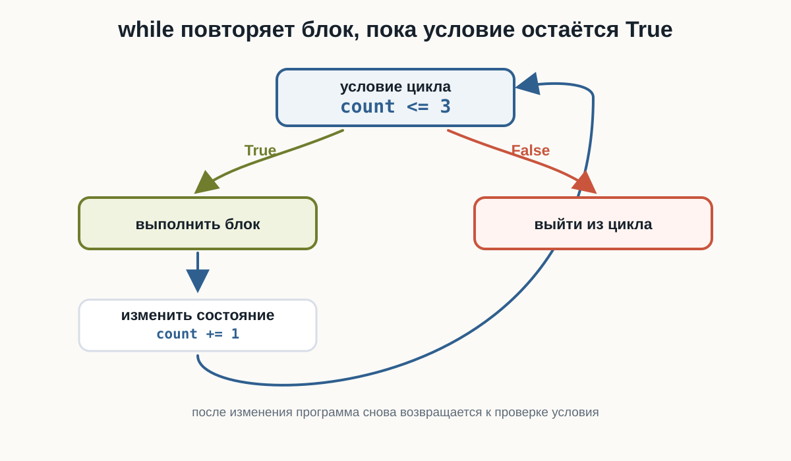
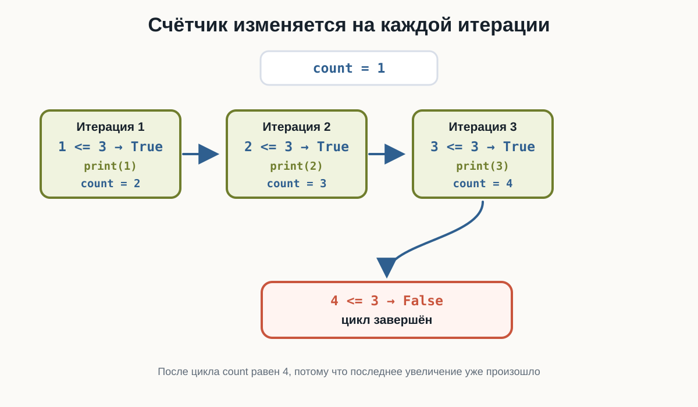
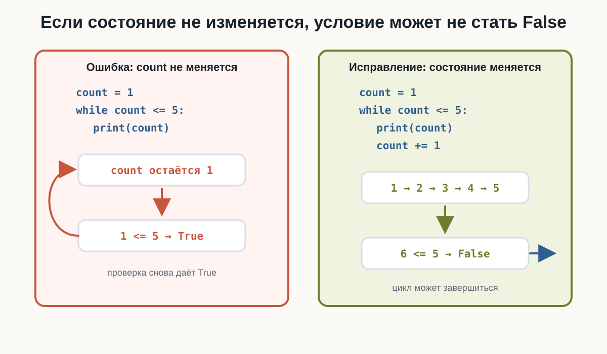
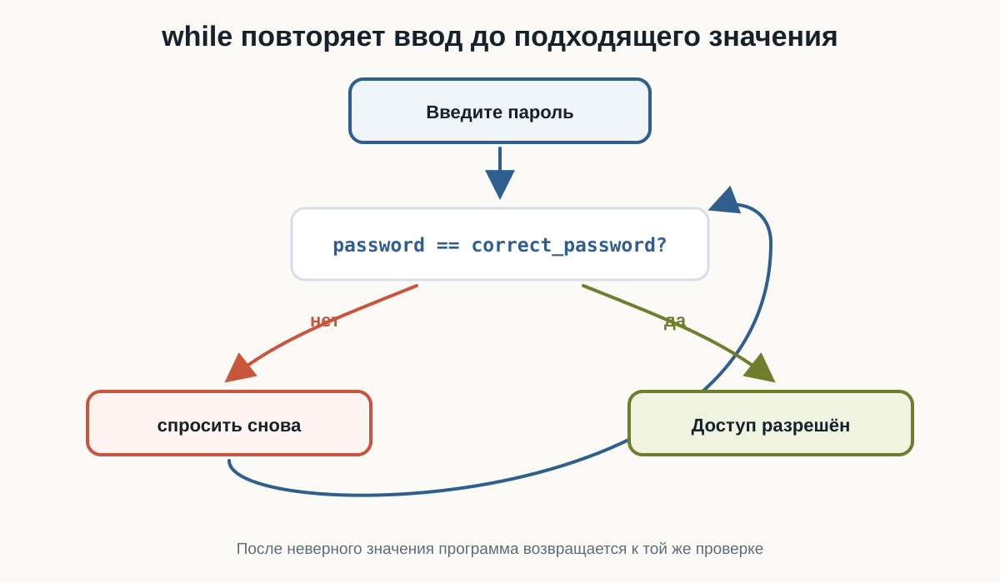
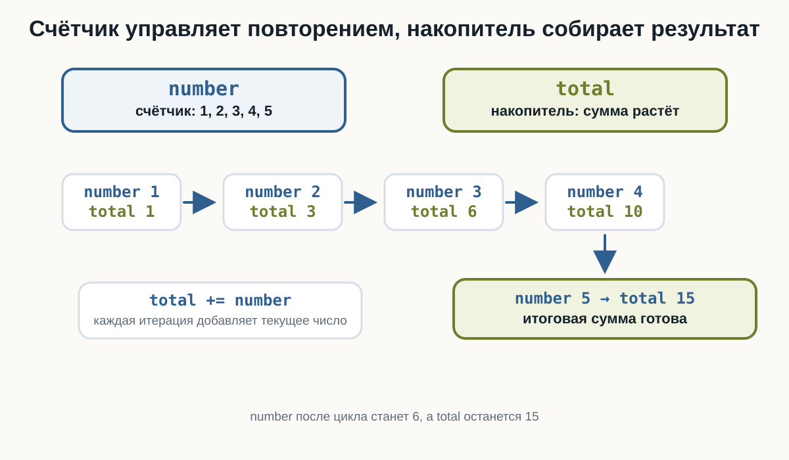

# 3.9 Цикл while
Главный вопрос главы:
Как заставить программу повторять действия, пока выполняется условие?
В предыдущих главах мы научились задавать программе вопросы:
age >= 18
password == "python123"
number > 0Каждое такое выражение даёт логический результат:
Trueили:
FalseУсловия позволяют выбрать действие один раз. Но иногда одного выбора недостаточно.
Например:
пока пароль неверный
спрашивать пароль сноваили:
пока число не дошло до 5
вывести число
увеличить числоДля таких ситуаций в Python используется цикл while.
Зачем программе повторять действия
Представьте программу, которая должна вывести приветствие три раза.
Без цикла можно написать:
print("Привет")
print("Привет")
print("Привет")Такой код работает, но в нём есть проблема: количество повторений зашито вручную.
Если нужно не три, а тридцать раз, код быстро станет неудобным.
Цикл позволяет описать повторение как правило:
пока условие истинно
выполняй блок командВ Python это записывается так:
while условие:
действиеСлово while можно читать как:
пока
Первый цикл while
Начнём с простого примера:
count = 1
while count <= 3:
print("Привет")
count += 1Результат:
Привет
Привет
ПриветЗдесь есть три важные части:
count = 1задаёт начальное значение;while count <= 3:проверяет условие;count += 1изменяет значение после каждой итерации.
Итерация — это одно выполнение тела цикла.
В этом примере тело цикла выполняется три раза.
Попробуйте в HTML-версии изменить:
- начальное значение
count; - границу
3; - шаг
count += 1.
Как работает while
Цикл while проверяет условие до выполнения тела цикла.
Общая схема такая:
проверить условие
если True:
выполнить тело цикла
вернуться к условию
если False:
выйти из цикла
Важно:
whileповторяет блок, пока условие остаётсяTrue.
Если условие сразу равно False, тело цикла не выполнится ни разу.
Например:
count = 10
while count < 5:
print(count)
count += 1Здесь 10 < 5 сразу даёт False, поэтому print(count) не выполнится.
Счётчик в цикле
Часто внутри while используется счётчик.
Счётчик — это переменная, которая помогает управлять количеством повторений.
number = 1
while number <= 5:
print(number)
number += 1
print("После цикла number =", number)Результат:
1
2
3
4
5
После цикла number = 6Сначала number равен 1.
После каждой итерации выполняется строка:
number += 1Она увеличивает number на 1.
Когда number становится равен 6, условие:
number <= 5становится False, и цикл завершается.

Граница включается или не включается
Сравнение в условии определяет, попадёт ли граничное значение в цикл.
Если написать:
while count < 5:цикл выполняется, пока count меньше 5. Само значение 5 уже не подходит.
Если написать:
while count <= 5:значение 5 подходит, потому что условие означает «меньше или равно».
Разница между < и <= особенно важна в циклах, потому что она меняет количество итераций.
Обратный счёт
Счётчик не обязан увеличиваться.
Он может двигаться в обратную сторону:
count = 5
while count >= 1:
print(count)
count -= 1
print("Старт!")Результат:
5
4
3
2
1
Старт!Здесь условие:
count >= 1остаётся истинным для 5, 4, 3, 2 и 1.
После каждой итерации выполняется:
count -= 1Когда count становится равен 0, условие 0 >= 1 даёт False.
Бесконечный цикл
У цикла while есть важная опасность: условие может никогда не стать False.
Например:
count = 1
# ВНИМАНИЕ: этот цикл бесконечный, потому что count не изменяется.
while count <= 5:
print(count)infinite-loop.py
count = 1
# ВНИМАНИЕ: этот цикл бесконечный, потому что count не изменяется.
while count <= 5:
print(count)В этом коде count всегда остаётся равен 1.
Проверка:
count <= 5каждый раз превращается в:
1 <= 5Результат снова True, поэтому цикл продолжает выполняться.

Чтобы цикл завершился, состояние должно изменяться так, чтобы условие когда-нибудь стало False.
Правильный вариант:
count = 1
while count <= 5:
print(count)
count += 1В HTML-версии бесконечный пример оставлен статическим. Текущий playground не имеет безопасного прерывания синхронного бесконечного цикла, поэтому такой код нельзя предлагать к запуску.
while и пользовательский ввод
while полезен, когда программа должна повторять ввод до подходящего значения.
Например, можно спрашивать пароль, пока пользователь не введёт правильный:
correct_password = "python123"
password = input("Введите пароль: ")
while password != correct_password:
print("Неверный пароль")
password = input("Попробуйте ещё раз: ")
print("Доступ разрешён")Попробуйте ввести несколько неправильных паролей, а затем:
python123Цикл повторяется, пока условие:
password != correct_passwordравно True.
Когда пароль совпадает с правильным, условие становится False, и программа выходит из цикла.

Повторная проверка данных
Та же идея работает не только с паролем.
Например, программа может требовать положительное число:
number = float(input("Введите положительное число: "))
while number <= 0:
print("Нужно число больше нуля")
number = float(input("Попробуйте ещё раз: "))
print("Принято:", number)Проверьте последовательность:
-5
0
10Для -5 и 0 условие number <= 0 истинно, поэтому программа просит ввести число снова.
Для 10 условие становится ложным, и цикл завершается.
Накопитель
В циклах часто встречается ещё одна роль переменной: накопитель.
Счётчик управляет повторением.
Накопитель собирает результат.
Например, найдём сумму чисел от 1 до 5:
number = 1
total = 0
while number <= 5:
total += number
number += 1
print("Сумма:", total)Результат:
Сумма: 15Здесь:
number— счётчик;total— накопитель.
На каждой итерации выполняется:
total += numberЭто значит: прибавить текущее значение number к сумме.

После цикла:
number == 6
total == 15Повторный ввод и накопитель
Теперь объединим три идеи:
- повторный
input(); - счётчик;
- накопитель.
Программа спросит три числа и найдёт их сумму:
count = 1
total = 0
while count <= 3:
number = float(input("Введите число: "))
total += number
count += 1
print("Сумма:", total)Проверьте ввод:
10
20
5Результат:
Сумма: 35.0Шаг счётчика
Счётчик можно изменять не только на 1.
Например:
number = 1
while number <= 5:
print(number)
number += 2Результат:
1
3
5Такой цикл завершается, потому что number всё равно движется к значению, при котором условие станет False.
Важно проверять направление изменения.
Если условие ждёт, что число станет больше границы, счётчик должен увеличиваться.
Если условие ждёт, что число станет меньше границы, счётчик должен уменьшаться.
Что важно запомнить
while повторяет блок, пока условие истинно:
while условие:
тело_циклаУсловие проверяется до первой итерации.
Поэтому цикл может не выполниться ни разу.
Тело цикла записывается с отступом.
Внутри цикла обычно должно изменяться состояние программы:
count += 1или:
count -= 1Если состояние не меняется, условие может никогда не стать False.
Счётчик управляет повторением.
Накопитель собирает результат.
Главная цепочка этой главы:
условие
↓
True
↓
выполнить действие
↓
изменить состояние
↓
вернуться к условиюПрактические задания
Задание 1. Три приветствия
Напишите цикл while, который выводит:
Приветтри раза.
count = 1
while count <= 3:
print("Привет")
count += 1Задание 2. Числа от 1 до 5
Выведите числа от 1 до 5 с помощью while.
number = 1
while number <= 5:
print(number)
number += 1Задание 3. Обратный счёт
Выведите числа от 5 до 1, а затем строку:
Старт!count = 5
while count >= 1:
print(count)
count -= 1
print("Старт!")Задание 4. Положительное число
Попросите пользователя ввести положительное число.
Пока число меньше или равно 0, выводите:
Нужно число больше нуляи спрашивайте снова.
number = float(input("Введите положительное число: "))
while number <= 0:
print("Нужно число больше нуля")
number = float(input("Попробуйте ещё раз: "))
print("Принято:", number)Задание 5. Сумма от 1 до 5
С помощью while найдите сумму чисел:
1 + 2 + 3 + 4 + 5number = 1
total = 0
while number <= 5:
total += number
number += 1
print("Сумма:", total)Задание 6. Сумма трёх чисел
Попросите пользователя ввести три числа и выведите их сумму.
Используйте while, счётчик и накопитель.
count = 1
total = 0
while count <= 3:
number = float(input("Введите число: "))
total += number
count += 1
print("Сумма:", total)Задание 7. Найдите ошибку
Почему этот цикл не завершается?
count = 1
while count <= 5:
print(count)Исправьте программу.
Переменная count не изменяется внутри цикла.
Условие:
count <= 5всё время остаётся истинным.
Исправленный вариант:
count = 1
while count <= 5:
print(count)
count += 1Задание 8. Граница цикла
Что выведет программа?
count = 1
while count < 5:
print(count)
count += 1Почему число 5 не выводится?
Результат:
1
2
3
4Число 5 не выводится, потому что условие:
count < 5истинно только для чисел меньше 5.
Когда count становится равен 5, условие даёт False, и цикл завершается.
Что дальше?
Теперь программа умеет повторять действия, пока условие остаётся истинным.
Следующий шаг:
повторение по условию
↓
перебор последовательностиДля этого используется цикл for.